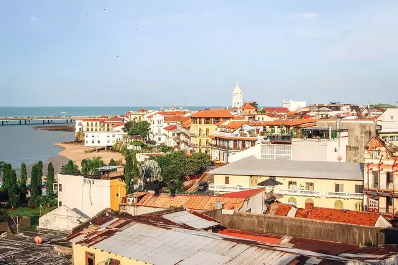
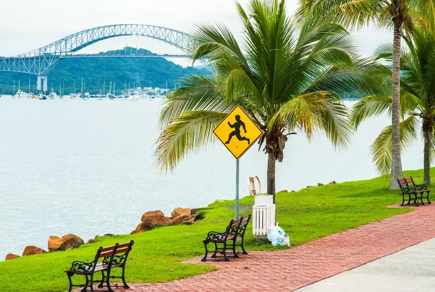
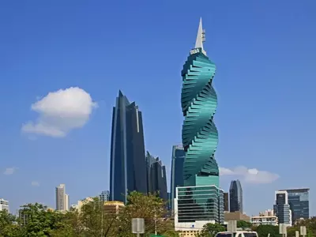
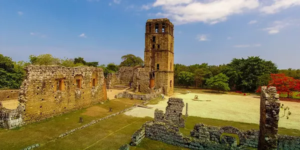
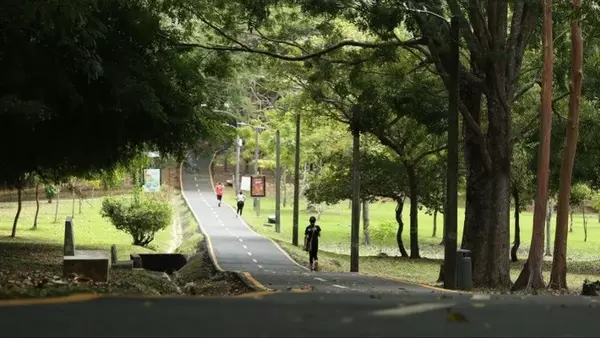

Panama City Chamber of Commerce
Dark Mode
Home
Discover
Directory
Join
Number of Visits:
Panama City Gallery

View from Casco Viejo

Panama City Causeway

The Screw Building
Panama Canal

Panama Viejo - Old Panama

Omar Park